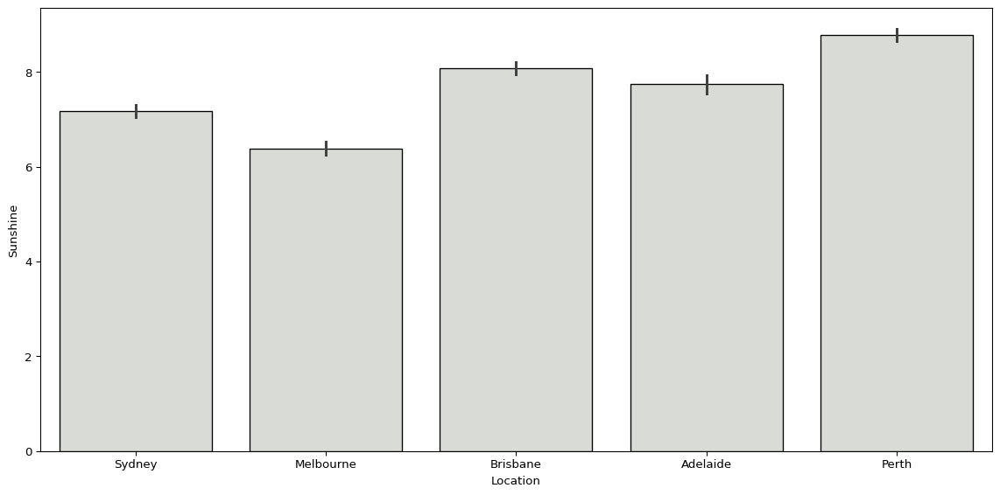

# import packages
import matplotlib.pyplot as plt
import numpy as np
import pandas as pd
import seaborn as sns
# import the dataset
df = pd.read_csv('data/weatherAUS.csv')Visually Exploring Data Using Seaborn
We are using Australian weather data, taken from Kaggle. To download the data, click here.
Objectives:
- Understand how to describe data quantitatively and when different methods are appropriate
- Visualise data as a means of describing it
- Show how to visualising data is a shortcut for describing central tendency, spread, uncertainty etc.
- Introduce ideas around describing and visualising relationships between variables
# subset of observations from five biggest cities
big_cities = (
df.loc[df['Location'].isin(['Adelaide', 'Brisbane', 'Melbourne', 'Perth', 'Sydney'])]
.copy()
)Visualising a Single Variable
- What do we want to know when we are visualising a sample taken from a single variable?
- We want to understand the value that the value tends to take, and how much it tends to deviate from its typical value.
- The central tendency and deviation are ways to describe a sample.
- Visualising the distribution of a variable can tell us these things (approximately), and can tell us about the shape of the data too.
Describing a Sample
- What is the best way to describe a variable?
- What is the average value? Or the value it is most likely to take? What is the best value to describe it in one go?
- The “central tendency” is the average or most common value that a variable takes. Mean, median, and mode are all descriptions of the central tendency.
- Mean - Sum of values in a sample divided by the total number of observations
- Median - The midpoint value if the sample is ordered from highest to lowest
- Mode - The most common value in the sample
- The mean is the most common approach, but the mean, median, and mode choice are context-dependent. Other approaches exist, too, such as the geometric mean.
- The geometric mean multiplies all values in the sample and takes the \(n\)th root of that multiplied value.
- It can be useful when dealing with skewed data or data with very large ranges, and when dealing with rates, proportions etc. However it can’t handle zeros or negative values.
- The mode value is generally most useful when dealing with categorical variables.
# mode rainfall by location
big_cities.groupby('Location')['Rainfall'].agg(pd.Series.mode)Location
Adelaide 0.0
Brisbane 0.0
Melbourne 0.0
Perth 0.0
Sydney 0.0
Name: Rainfall, dtype: float64# mode location
big_cities['Location'].agg(pd.Series.mode)0 Sydney
Name: Location, dtype: object# mode location using value counts
big_cities['Location'].value_counts().iloc[0:1]Location
Sydney 3344
Name: count, dtype: int64# mean rainfall by location
np.round(big_cities.groupby('Location')['Rainfall'].mean(), decimals=2)Location
Adelaide 1.57
Brisbane 3.14
Melbourne 1.87
Perth 1.91
Sydney 3.32
Name: Rainfall, dtype: float64# median rainfall by location
big_cities.groupby('Location')['Rainfall'].median()Location
Adelaide 0.0
Brisbane 0.0
Melbourne 0.0
Perth 0.0
Sydney 0.0
Name: Rainfall, dtype: float64# geometric mean max temperature by location
big_cities.groupby('Location')['MaxTemp'].apply(lambda x: np.exp(np.log(x).mean()))Location
Adelaide 21.888697
Brisbane 26.152034
Melbourne 19.972352
Perth 24.320203
Sydney 22.570993
Name: MaxTemp, dtype: float64- Why do the mean and median differ so much? Why would the median rainfall be zero for all five cities?
- Does this matter? How would it change our understanding of the rainfall variable?
- Visualising the distribution can tell us more!
Comparing the Mean & Median
- We have simulated three different distributions that have slightly different shapes. and see how their mean and median values differ.
# generate distributions
np.random.seed(123)
normal_dist = np.random.normal(10, 1, 1000)
right_skewed_dist = np.concatenate([np.random.normal(8, 2, 600), np.random.normal(14, 4, 400)])
left_skewed_dist = np.concatenate([np.random.normal(14, 2, 600), np.random.normal(8, 4, 400)])# import packages
import warnings
import matplotlib.pyplot as plt
import seaborn as sns
# control some deprecation warnings in seaborn
warnings.filterwarnings(
"ignore",
category=FutureWarning,
module="seaborn"
)
# set figure size
plt.rcParams['figure.figsize'] = (12, 6)
# function for calculating summary statistics and plotting distributions
def plot_averages(ax, data, title):
mean = np.mean(data)
median = np.median(data)
sns.histplot(data, color="#d9dcd6", bins=30, ax=ax)
ax.axvline(mean, color="#0081a7", linewidth=3, linestyle="--", label=f"Mean: {mean:.2f}")
ax.axvline(median, color="#ef233c", linewidth=3, linestyle="--", label=f"Median: {median:.2f}")
ax.set_title(title)
ax.set_ylabel('')
ax.legend()# plot distributions
fig, axes = plt.subplots(1, 3, sharey=True)
plot_averages(axes[0], normal_dist, "Normal Distribution\n(Mean ≈ Median)")
plot_averages(axes[1], right_skewed_dist, "Right-Skewed Distribution\n(Mean > Median)")
plot_averages(axes[2], left_skewed_dist, "Left-Skewed Distribution\n(Mean < Median)")
plt.suptitle("Comparison of Mean & Median Across Distributions", fontsize=16)
plt.tight_layout()
plt.show()
- The mean and median of the normal distribution are identical, while the two skewed distributions have slightly different means and medians.
- The mean is larger than the media when the distribution is right-skewed, and the median is larger than the mean when it is left-skewed.
- When the distribution is skewed, the median value will be a better description of the central tendency, because the mean value is more sensitive to extreme values (and skewed distributions have longer tails of extreme values).
- These differences point to another important factor to consider when summarising data - the spread or deviation of the sample.
- How do we measure how a sample is spread around the central tendency?
- Standard deviation and variance quantify spread.
- Variance, the average squared difference between observations and the mean value, measures how spread out a sample is.
- Standard deviation is the square root of the variance. It’s easier to interpret because it’s in the same units as the sample.
# generate distributions
np.random.seed(123)
mean = 10
std_devs = [1, 2, 3]
distributions = [np.random.normal(mean, std_dev, 1000) for std_dev in std_devs]# function for calculating summary statistics and plotting distributions
def plot_spread(ax, data, std_dev, title):
mean = np.mean(data)
std_dev = np.std(data)
sns.histplot(data, color="#d9dcd6", bins=30, ax=ax)
ax.axvline(mean, color="#0081a7", linewidth=3, linestyle="--", label=f"Mean: {mean:.2f}")
ax.axvline(mean + std_dev, color="#ee9b00", linewidth=3, linestyle="--", label=f"Mean + 1 SD: {mean + std_dev:.2f}")
ax.axvline(mean - std_dev, color="#ee9b00", linewidth=3, linestyle="--", label=f"Mean - 1 SD: {mean - std_dev:.2f}")
ax.set_title(f"{title}")
ax.legend()# plot distributions
fig, axes = plt.subplots(1, 3, sharey=True, sharex=True)
for i, std_dev in enumerate(std_devs):
plot_spread(axes[i], distributions[i], std_dev, f"Standard Deviation = {std_dev}")
plt.suptitle("Effect of Standard Deviation on Distribution Shape", fontsize=16)
plt.tight_layout()
plt.show()
- As standard deviation increases, the spread of values around the mean increases.
- We can compute various summary statistics that describe a sample (mean, median, standard deviation, kurtosis etc. etc.), or we can just visualise it!
- Visualising distributions is a good starting point for understanding a sample. It can quickly and easily tell you a lot about the data.
# plot distribution of rainfall
rainfall_mean = np.mean(big_cities['Rainfall'])
rainfall_median = np.median(big_cities['Rainfall'].dropna())
sns.histplot(data=big_cities, x='Rainfall', binwidth=10, color="#d9dcd6")
plt.axvline(rainfall_mean, color="#0081a7", linestyle="--", linewidth=2, label=f"Mean: {rainfall_mean:.2f}")
plt.axvline(rainfall_median, color="#ef233c", linestyle="--", linewidth=2, label=f"Median: {rainfall_median:.2f}")
plt.title("Distribution of Rainfall in Australia's Big Cities")
plt.legend()
plt.tight_layout()
plt.show()
# plot distribution of sunshine
sunshine_mean = np.mean(big_cities['Sunshine'])
sunshine_median = np.median(big_cities['Sunshine'].dropna())
sns.histplot(data=big_cities, x='Sunshine', binwidth=1, color="#d9dcd6")
plt.axvline(sunshine_mean, color="#0081a7", linestyle="--", linewidth=2, label=f"Mean: {sunshine_mean:.2f}")
plt.axvline(sunshine_median, color="#ef233c", linestyle="--", linewidth=2, label=f"Median: {sunshine_median:.2f}")
plt.title("Distribution of Sunshine in Australia's Big Cities")
plt.legend()
plt.tight_layout()
plt.show()
- These two plots require a little more code, but we can get most of what we want with a lot less.
sns.histplot(data=big_cities, x='MaxTemp')
plt.tight_layout()
plt.show()
sns.countplot(big_cities, x='Location', color="#d9dcd6", edgecolor='black')
plt.ylim(3000, 3500)
plt.tight_layout()
plt.show()
sns.countplot(big_cities, x='RainTomorrow', color="#d9dcd6", edgecolor='black')
plt.tight_layout()
plt.show()
big_cities['RainTomorrow'].value_counts()RainTomorrow
No 11673
Yes 3543
Name: count, dtype: int64Visualising Multiple Variables
- We will often want to know how values of a given variable change based on the values of another.
- This may not indicate a relationship, but it helps us better understand our data.
sns.barplot(big_cities, x='Location', y='Sunshine', color="#d9dcd6", edgecolor='black')
plt.tight_layout()
plt.show()
sns.boxplot(big_cities, x='Location', y='MaxTemp', color="#d9dcd6")
plt.tight_layout()
plt.show()
sns.boxplot(data=big_cities, x='RainTomorrow', y='Humidity3pm', color="#d9dcd6")
plt.tight_layout()
plt.show()
sns.kdeplot(data=big_cities, x='Humidity3pm', hue='RainTomorrow')
plt.tight_layout()
plt.show()
(
big_cities
# convert date to datetime
.assign(Date=pd.to_datetime(big_cities['Date']))
# create year-month column
.assign(Year_Month=lambda x: x['Date'].dt.to_period('M'))
# group by year-month and calculate sum of rainfall
.groupby('Year_Month')['Rainfall'].sum()
# convert year-month index back to column in dataframe
.reset_index()
# create year-month timestamp for plotting
.assign(Year_Month=lambda x: x['Year_Month'].dt.to_timestamp())
# pass df object to seaborn lineplot
.pipe(lambda df: sns.lineplot(data=df, x='Year_Month', y='Rainfall', linewidth=2))
)
plt.tight_layout()
plt.show()
(
big_cities
# convert date to datetime object
.assign(Date=pd.to_datetime(big_cities['Date']))
# set date column as index
.set_index('Date')
# resample by month-end for monthly aggregations
.resample('ME')
# calculate mean sunshine per month
.agg({'Sunshine': 'mean'})
# convert month index back to column in dataframe
.reset_index()
# pass df object to seaborn lineplot
.pipe(lambda df: sns.lineplot(data=df, x='Date', y='Sunshine', color="#1f77b4", linewidth=2))
)
plt.tight_layout()
plt.show()
fig, axes = plt.subplots(1, 2)
(
big_cities
.assign(Date=pd.to_datetime(big_cities['Date']))
.assign(Month=lambda x: x['Date'].dt.month)
.groupby('Month')['Rainfall'].mean()
.reset_index()
.pipe(lambda df: sns.lineplot(data=df, x='Month', y='Rainfall', color="#1f77b4", linewidth=2, ax=axes[0]))
)
(
big_cities
.assign(Date=pd.to_datetime(big_cities['Date']))
.assign(Month=lambda x: x['Date'].dt.month)
.groupby('Month')['Sunshine'].mean()
.reset_index()
.pipe(lambda df: sns.lineplot(data=df, x='Month', y='Sunshine', color="#ff7f0e", linewidth=2, ax=axes[1]))
)
xticks = range(1, 13)
xticklabels = ['Jan', 'Feb', 'Mar', 'Apr', 'May', 'Jun', 'Jul', 'Aug', 'Sep', 'Oct', 'Nov', 'Dec']
for ax in axes:
ax.set_xticks(xticks) # Set ticks
ax.set_xticklabels(xticklabels, rotation=45)
ax.set_xlabel('')
ax.set_ylabel('')
axes[0].set_title('Average Rainfall by Month', fontsize=16)
axes[1].set_title('Average Sunshine by Month', fontsize=16)
plt.tight_layout()
plt.show()